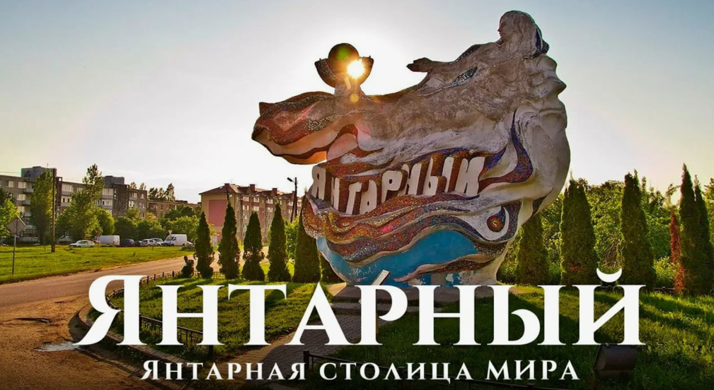
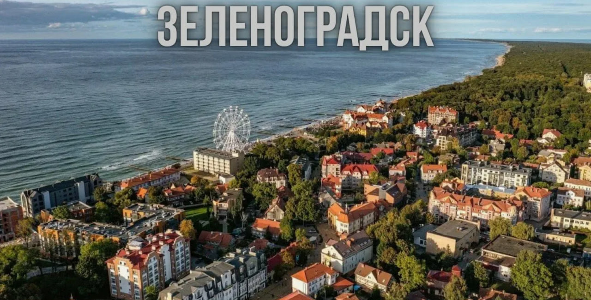
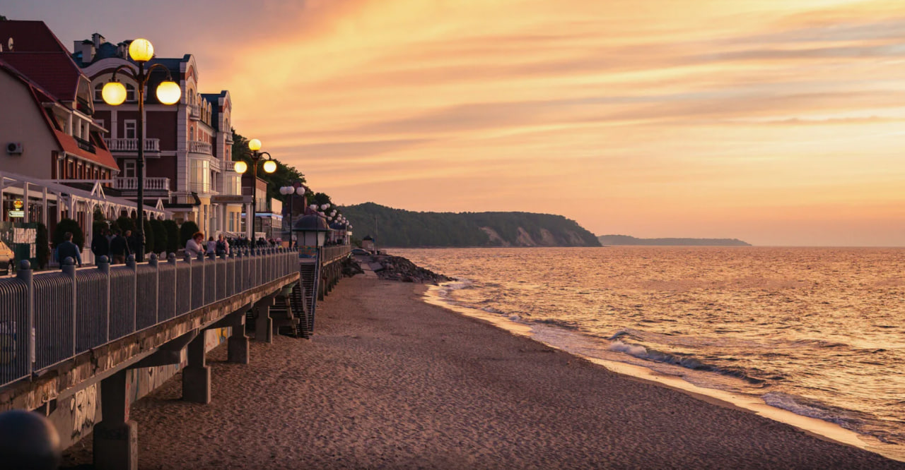
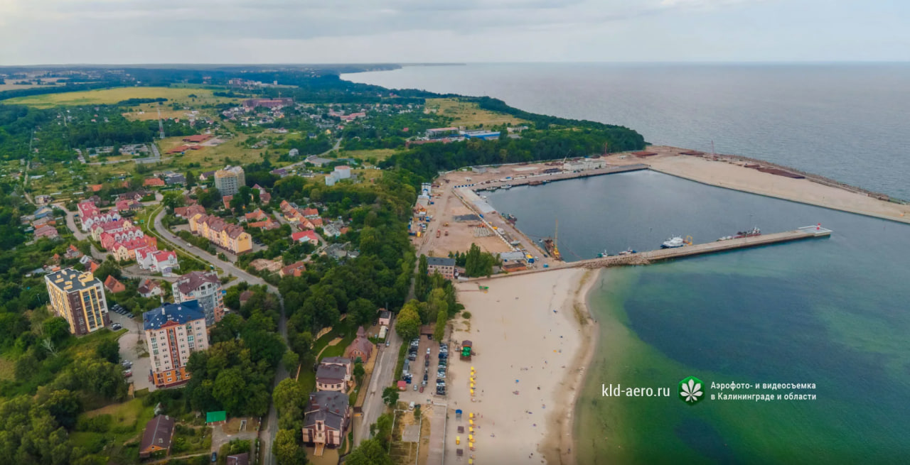
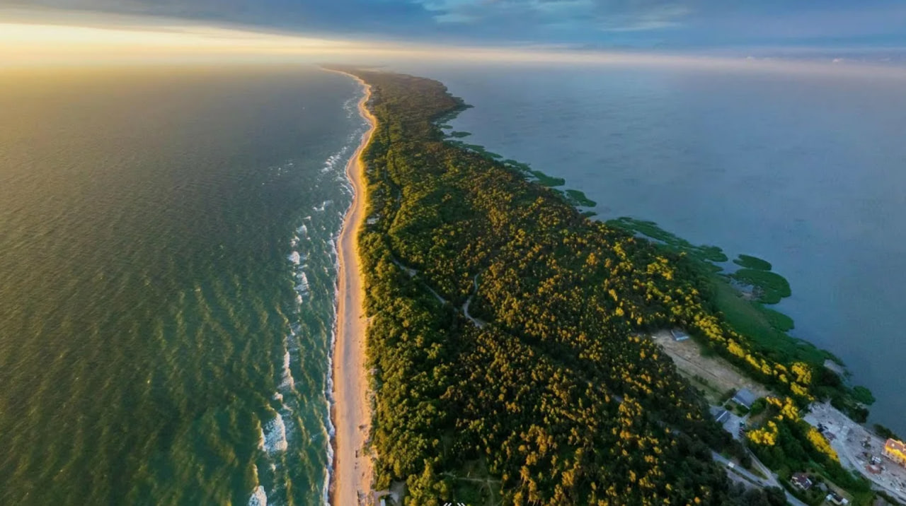
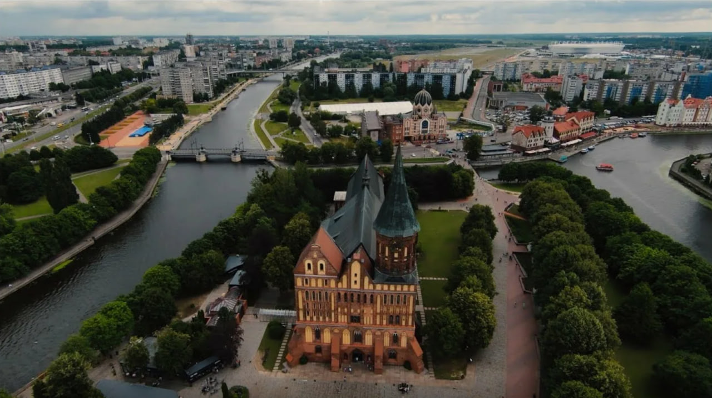
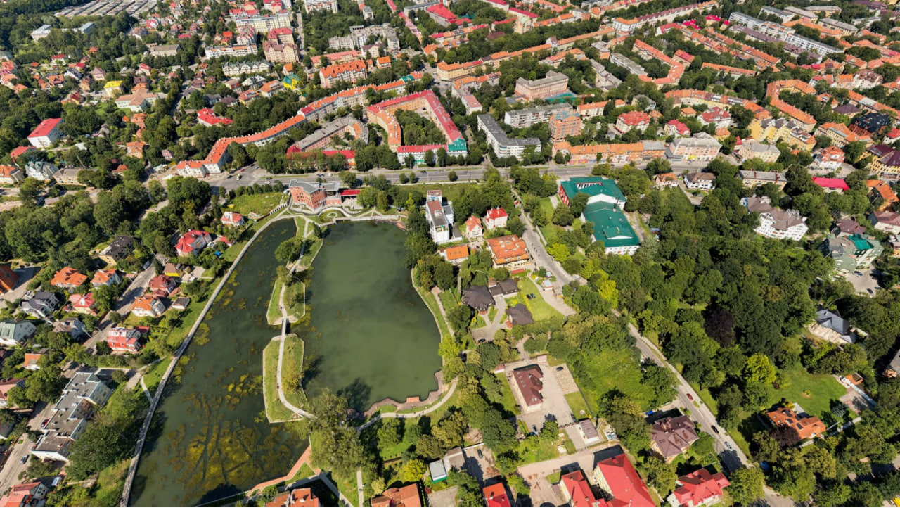
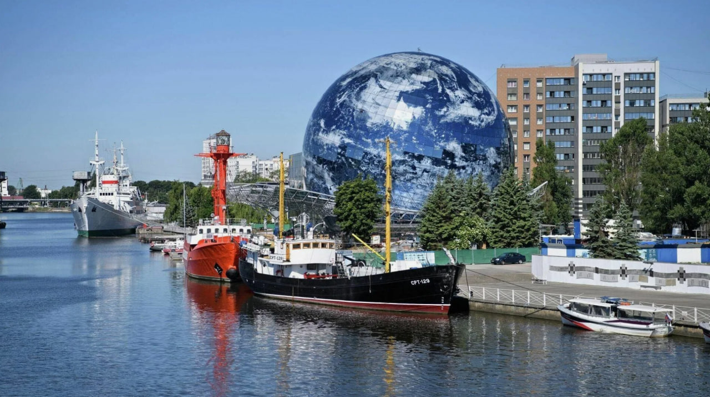

Аналитика и путеводитель по побережью
Лучшие пляжи РФ
Город кошек
Тихий отдых
Уютный порт
Природа ЮНЕСКО
Сердце города
Старые виллы
Корабли и наука

Пляжи с Синим флагом и крупнейший карьер по добыче янтаря.

Курорт с котами, музеями и выходом на Куршскую косу.

Лечебный климат, сосны и уникальная архитектура Раушена.

Тихий город с отличным променадом и резиденцией президента.

Песчаные дюны, Танцующий лес и высота Эфа.

Кафедральный собор и могила Иммануила Канта.

Исторический квартал вилл начала XX века.

Корабли-музеи и экспозиции о глубинах океана.